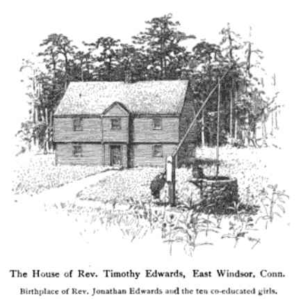
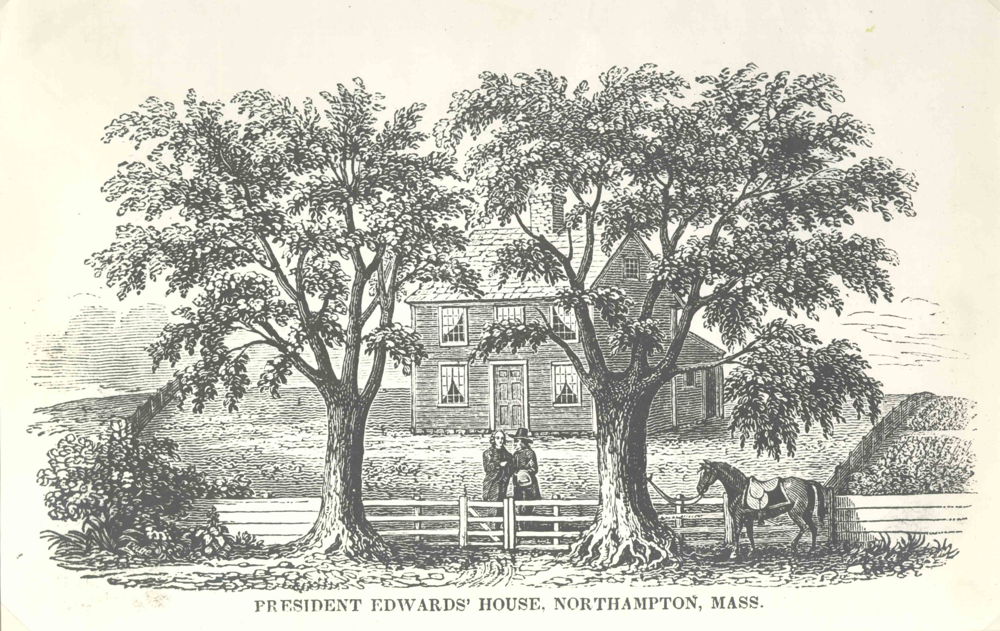
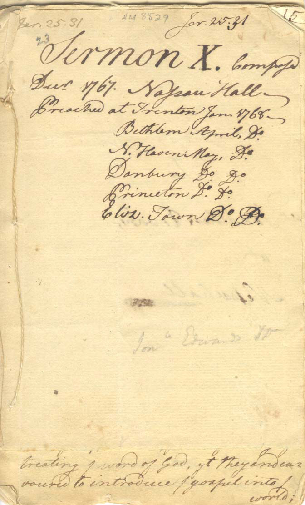

Jonathan Edwards's Early Life and Family

Edwards was born on October 5, 1703, in East Windsor, Connecticut into a Puritan evangelical household. His father, the Reverend Timothy Edwards, was a Congregational minister. His mother, Esther Stoddard, was the daughter of the Reverend Solomon Stoddard of Northampton, Massachusetts. Edwards was the only boy in a family of eleven. Educated at home by his parents and sisters, he entered Yale College in 1716, graduating in 1720. He continued his studies in theology, receiving a Master of Arts in 1723. (left: Mrs. H.M. Plunkett, “Ten Co-Educated Girls Two Hundred Years Ago," Scribner’s Magazine, April 1903, p. 453.)

In 1726 Edwards went to the Congregational church at Northampton as an assistant to his grandfather, the Reverend Solomon Stoddard. He was ordained early in 1727 and in the same year married Sarah Pierpont of New Haven. Together they had eleven children-three sons and eight daughters. His son Jonathan Edwards, Jr. followed in his father's footsteps, studying theology and ultimately becoming a preacher in Connecticut. Below is a front page from one of Jonathan Edwards, Jr.'s sermons:"Sermon X, 1767, Nassau Hall, Preached at Trenton, Bethlehem, New Haven, Danbury, Princeton, and Elis Town." (below: Manuscripts Division, Jonathan Edwards Collection)
The Life of Rev. David Brainer, Chiefly Extracted from His Diary.
New-York, American Tract Soc. [1833]
Graphic Arts Collection (GAX) Hamilton 308

(Manuscripts Division, Jonathan Edwards Collection)
Jonathan Edwards Exhibit, The Great Awakening, College of New Jersey (Princeton University)
Follow these links for more information about the Seeley G. Mudd Manuscript Library and Princeton University.